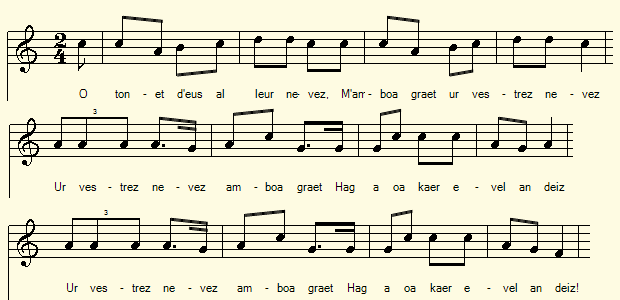
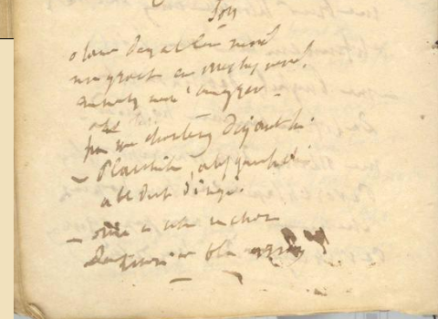
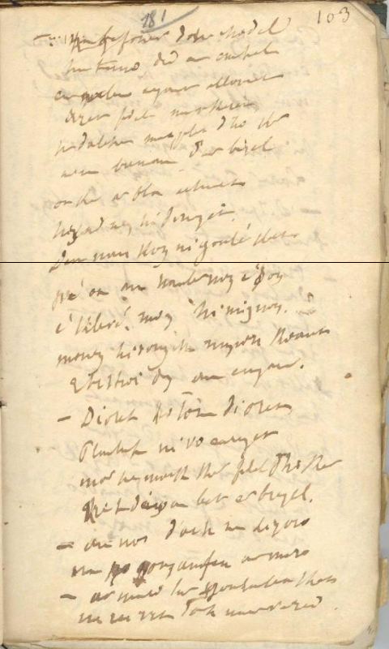
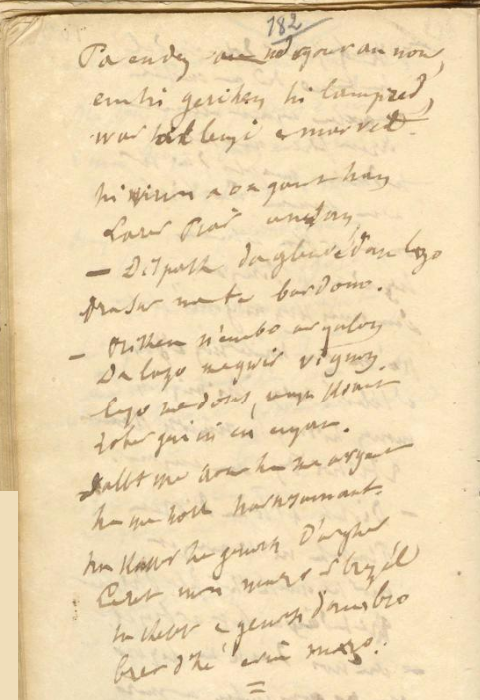

|
A propos de la mélodie Ce chant appartient à la famille recensée dans la classification Malrieu sous l'indicatif M-00731 dont le titre générique est "Ar plac'h he daou bried" (La fille aux deux maris). Il existe toute une famille de mélodies apparentées entre elles pour les diverses versions de cette gwerz. Toutes s'articulent autour de modules à 6 pieds alternant souvent avec d'autres modules à 7, 8 ou 9 pieds. Seule cette version du Trégor notée par Maurice Duhamel auprès de Maryvonnne Le Flemm à Port-Blanc, sous le N°140, à la p. 70 de ses "Musiques Bretonnes" enchaine 6 phrases de 8 pieds comme le présent poème. A propos du texte Le site de la Bibliothèque numérique du Centre de recherche bretonne et celtique (CRBC), consulté le 14 août 2020, (http://bibnumcrbc.huma-num.fr/document/3108) ne fournissait pas de transcription pour les pages 180 à 188 du 2ème carnet de collecte de La Villemarqué. La présente transcription KLT se fonde sur les photos de ces pages telles qu'elles apparaissent à l'écran et plusieurs passages demeurent peu clairs. L'identification avec le chant M-00731 semble cependant certaine. On trouvera sur le site "Ton.kan.bzh" (https://tob.kan.bzh/chant-00731.html) une étude complète (avant la publication du carnet de Keransquer N°2 ) de cette gwerz. On verra qu'outre "La fille [ou la femme] aux deux maris", ce chant porte plusieurs autres titres dont les plus fréquents sont "Feunteun ar Wazh Haleg" (La fontaine de Gwashalec) ou "Ar plac'h er feunteun" (La fille à la fontaine). Les versions et les occurrences de cette gwerz sont innombrables. D'autant qu'il n'est pas aisé de la distinguer d'autres pièces dont les intrigues sont apparentées: chants M-00732 (Retour du soldat), M-00904 (La fille tombée dans la fontaine), M-00735 (An disparti e noz kentañ an eured = Séparés le jour du mariage) auquel se rattachent, dans le Barzhaz, La ceinture de noces et M-00259 (Ar breur mager. Le frère de lait). Un certain nombre de remarques faites à propos du chant du Barzhaz portant ce nom sont valables pour la présente gwerz. On verra en particulier à la page bretonne correspondante, que le carnet n°1, à la page 66 présente lui aussi l'ébauche (5 vers de 12 pieds) d'un chant similaire commençant par: "N'eus ket e-barzh ar bed gwasoc'h 'vit ur "vammlez" (Il n'est rien de pire ici-bas qu'une marâtre). Ce foisonnement de références illustre la gravité des retombées sociologiques, dans les classes populaires tout au moins, des longues absences occasionnées par un système inhumain de conscription militaire ou par les longues campagnes de pêche. |
About the tune This song belongs to the series listed in the Malrieu classification under code M-00731, the generic title of which is "Ar plac'h he daou bried" (The girl with two husbands). There is a family likeness between the tunes accompanying the various versions of this gwerz. All of them revolve around 6-foot modules often alternating with 7, 8 or 9-foot modules. Only this version from Trégor noted by Maurice Duhamel, as sung by Maryvonnne Le Flemm at Port-Blanc, under number 140, on p. 70 of his "Musiques Bretonnes", is made up of 6 elements of 8 feet as is the present poem. About the lyrics The website of the Digital Library of the Breton and Celtic Research Center (CRBC), consulted on August 14, 2020, (http://bibnumcrbc.huma-num.fr/document/3108) did not provide a transcription for pages 180 to 188 of the 2nd La Villemarqué collection book. The present KLT transcript is based on the photos of these pages as they appear on the screen and several passages remain unclear. Identification with song M-00731, however, seems certain. One will find on the site "Ton.kan.bzh" (https://tob.kan.bzh/chant-00731.html) a complete study (before the publication of the Keransquer copybook N ° 2) of this gwerz. We will see that beside "The daughter [or the wife] with two husbands", this song comes with several other titles of which the most frequent are "Feunteun ar Wazh Haleg" (The fountain of Gwashalec) or "Ar plac'h er feunteun" (The girl at the fountain). The versions and occurrences of this gwerz are countless. All the more so,'gc since it is not easy to distinguish it from other pieces whose plots are much alike: songs M-00732 (Return of the soldier), M-00904 (The girl who fell in the fountain), M-00735 ( An disparti e noz kentañ an eured = Separated on their wedding day) to which the Barzhaz songs The wedding belt and M-00259 (Ar breur mager. The foster brother) are closely related. A number of remarks made about the Barzhaz song bearing this name are valid for this gwerz. We will see in particular on the corresponding Breton page, that notebook n ° 1, on page 66 also presents the outline (5 verses of 12 feet) of a similar song starting with: "N'eus ket e-barzh ar bed gwasoc'h 'vit ur" vammlez " (There is nothing worse here than a stepmother). This profusion of references illustrates the profound sociological repercussions, in the working classes at least, of the long absences caused by an inhuman system of military conscription or by the long fishing campaigns. |
|
MANUSCRIT p.180 / bas    |
BREZHONEG (Stumm KLT) p.180 / bas SON I 1. O tonet d'eus al leur nevez M'am-boa graet ur mestrez nevez. Ur mestrez nevez m'am-boa graet. Hag [a oa kaer evel an deiz.] 2. Ha me a c'houlenn diganti, Ha me a c'houlenn dig[anti: - Plac'hik, abeg a gavfec'h-c'hwi E vefe poent dimeziñ? 3. - Ned eo ket, setu, ma c'hoant Da zimeziñ er bloaz-mañ. p.181 / 103 - Un dra [?] pounner d'eus e c'hodell Astenn a ra d'an dimezell: 4. Ur walenn arc'hant alaouret - Bezet fidel ha gortozit! Ret eo delc'her mat soñj d'ho ker [Rak] me ya bremañ d'ar brezel! - ... II 5. Oa ket ar bloaz [peur]echuet Oa ket ar bloaz peurechuet He zad en-doa hi dimezet D'un nen kozh n'hi goule[nne] ket 6. Pa oa an hanternoz o son E kleve. mouez he mignon, Mouez hirvouduz he mignon koant [Oa] o tistreiñ d'eus an emgann.. 7. - Digorit ho tor, digorit Plac'hik ni [a] vo añrajet Mar n'e voec'h ket fidel d'ho ker: Kriz ha taer oa bet ar brezel. 8. - An nor-mañ deoc'h na zigoro. Ha na gouzañvfen ar marv. - Ar marv, sur, gouzañvfec'h ket, Na zeuyo ket d'oc'h soudarded. p. 182 9. An nor pa he-deus digoret An nor pa he-deus digoret 'N he c'herc'henn ez eo lammet prest. War al leur-zi oa hi marvet. 10. Ur mignon ker a oa gantañ Hag a larer Piar anezhañ. - Dispak da gleze d'am lazhañ A dra-sur me te bardono. 11. - Biken n'em-bo [me] ar galon [Na] da lazhañ ma gwir vignon. - Lazhet ma dous mestrez koant Zoken gwa ni! en emgann! 12. Dallit ma aour ha ma arc'hant Dallit ma holl harnajemant, Na kasit hen ganeoc'h d'ar ger! Larit 'maon marv er brezel! 13. - A-gevred ganeoc'h ambr[oug]o Breur d'{ar mare] e vin marv! - (bis) [1] [2] = KLT gant Christian Souchon |
FRANCAIS p.180 / bas CHANSON I 1. Après l'aire neuve, au retour J'ai conquis un nouvel amour Un nouvel amour j'ai conquis Un doux minois, des traits exquis. 2. Chemin faisant je demandais, Chemin faisant je demandais: - Fillette, estimeriez-vous sage Que nous parlions mariage? 3. - Je ne suis pas très décidée A me marier cette année. - p.181 / 103 Sa poche que recelait-elle? [?] Il tendit à la demoiselle 4. Une bague en argent doré: - Un gage de fidélité... J'ai votre parole ma chère. A présent je pars pour la guerre. - ... II 5. L'année n''était pas écoulée, L'année n''était pas écoulée Que son père l'a mariée à Un vieillard qu'elle n'aime pas. 6. Un soir sur le coup de minuit, Elle ouït la voix de son ami. Elle gémissait, cette voix De l'ami rentré du combat: 7. - Ouvrez-nous votre porte, ouvrez! Vous allez nous faire enrager N'auriez-vous point tenu parole? La guerre fut cruelle et folle. 8. - Je n'ouvrirai pas cette porte: Dans l'instant qui suit, je suis morte. Oh, la mort vous épargnera. Elle épargne bien les soldats! p. 182 9. A peine eut-elle ouvert la porte, A peine eut-elle ouvert la porte Qu'il bondit, l'étrangle hors de lui. La voilà sur le sol qui git. 10. Il était avec son compère Un homme qu'on appelait Pierre. - Dégaine ta dague et tue-moi Pour sûr, je ne t'en voudrai pas. 11. - Jamais sur moi je ne prendrai De tuer un bon ami, jamais . - J'ai bien tué celle que j'aime. Au combat nous fîmes de même. 12. Voici mon or et mon argent, Voici tout mon harnachement, Emporte tout cela chez toi! Tu me diras mort au combat. 13. - Je veux t'accompagner encor, Frère, et te suivrai dans la mort! - (bis) [1] [2] = Traduction Christian Souchon (c) 2019 |
ENGLISH p.180 / bas A SONG 1. Back from a new threshing floor dance, I have won a new love perchance, I had won a new love perchance, And she was as fair as the day. 2. And I asked her, walking the way, And I asked her, walking the way: - Do you think it would be hurried, Young girl if you'd soon get married? 3. - I don't like the idea, my dear, To get married still in this year. - p.181 / 103 Now he produces a tiny Thing [?] he hands out to the lady: 4. - Here is a gilded silver ring: It's for you to keep while waiting I entreat you to keep your word, As for me, Im going to war... - ... II 5. Now barely a full year has passed, Now barely a full year has passed, Her father has married her off To an old man she doesn't love. 6. At the stroke of midnight a noise She heard. Was it not her friend's voice, The distressed voice of her friend. Come back. The war was at an end. 7. - Open your door, open, my dear Or we will be enraged, I fear, And even if you broke your word. Cruel and harsh indeed was this war. 8.- I won't open the door, she said, Cause the next moment I'll be dead. - Death is sure, young girl, to spare you It spared so many soldiers, too! - p. 182 9. She opened the door: the Bluecoat Burst in and grabbed her by the throat: A wild beast that God may confound! Now the girl laid dead on the ground. 10. Pierre, a friend of his was with him. Helped him to perform his last whim: - Unsheathe your saber and kill me. I won't blame you! You must agree! 11. - I'll never be able to end Your suffering, to kill a friend. - I did kill my dear fiancée. And we killed in the bloody fray. . 12. Here is my gold and my silver And my harness! It's all over! Take it all home for evermore! Tell them that I died in the war. 13. - I want to follow you in death, Brother! - he said in his last breath. (twice) [1] [2] = Translation Christian Souchon (c) 2019 |
|
[1] On trouve dans les "Gwerzioù" de Luzel, tome II, pp. 164 - 172, les 2 versions d' "Ar wreg he daou bried" qui se rapprochent le plus du texte de La Villemarqué, toutes deux chantées par Marguerite Philippe. L'une et l'autre se terminent par la phrase laconique "Setu un intañv yaouank [kozh graet]/ An noz kentañ e eured" (Voici un jeune [viel] homme devenu veuf, la nuit de ses noces!) [2] Le site RADdO (Réseau d'archives et de documentation de l'oralité) donne une version vendéenne du présent chant, intitulée "La Fille à la fontaine avant soleil levé" et enregistrée à Barbâtre, Île de Noirmoutier. En voici le début: "J'ai une méchante mère, ma dondaine Matin me fait lever, ma dondé M'envoie-t-à la fontaine / Avant soleil levé. Je m'y croyais seulette / Mon amant s'y trouvait Au bord de la fontaine / Nous mîmes à causer; Pendant que nous causions / Le soleil s'est levé Que va dire ma mère / Moi qui ai tant tardé. Tu lui diras, mignonne / Que l'eau était troublée..." Dans certaines versions de la gwerz bretonne, la perte de la virginité est évoquée de façon indirecte comme dans ce chant vendéen. |
[1] We find in Luzel's "Gwerzioù", volume II, pp. 164 - 172, the 2 versions of "Ar wreg he daou bried" which come closest to the text of La Villemarqué, both sung by Marguerite Philippe. Both end with the laconic phrase "Setu un intañv yaouank [kozh graet] / An noz kentañ e eured" (Here is a young [old] man widowed on his wedding night!) [2] The website RADdO (Orality archives and documentation network) gives a Vendée version of the present song, entitled "The girl at the fountain before sunrise" and recorded at Barbâtre, on Noirmoutier Island. Here is the beginning: "I have a bad mother, madondain Early in the morning makes me get up, madonday Sends me to the fountain / Before sunrise. I thought I was there alone / But my lover was there Along the edge of the fountain / We began to talk; While we were chatting / The sun rose. - What will my mother say / I have been out so long. - You shall tell her, darling / That the water was muddy ... " In certain versions of the Breton ballad, the loss of virginity is evoked indirectly, as in this Vendée song (last sentence). |